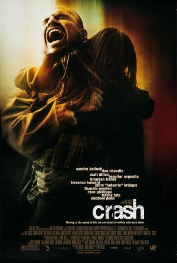

Reparto: |
Sandra Bullock, Don Cheadle, Matt Dillon, Jennifer Esposito, William Fichtner, Brendan Fraser, Terrence Howard, Ludacris, Thandiwe Newton, Ryan Phillippe, Michael Peña, Larenz Tate, Shaun Toub, Tony Danza, Keith David, Loretta Devine, Nona Gaye, Alexis Rhee, Art Chudabala, Bruce Kirby, Daniel Dae Kim, Jack McGee, Ashlyn Sanchez, Bahar Soomekh, Karina Arroyave, Sean Cory, Howard Fong, Billy Gallo, Ken Garito, Eddie J. Fernandez, Sylva Kelegian |
Genero: |
Drama | Racismo. Historias cruzadas |
Sinopsis: |
El descubrimiento en una cuneta del cuerpo de un hombre brutalmente asesinado hará que las vidas de varias personas se entrecrucen en Los Ángeles. Un policía veterano y racista, su compañero novato e idealista, la esposa del fiscal del distrito, un tendero iraní, un acaudalado matrimonio negro... Entre estos personajes surgirán tensiones raciales, religiosas y sociales que ilustran la caótica vida de los habitantes de Los Ángeles. Debut en la dirección del escritor-productor Paul Haggis,autor del guión de "Million Dollar Baby". |